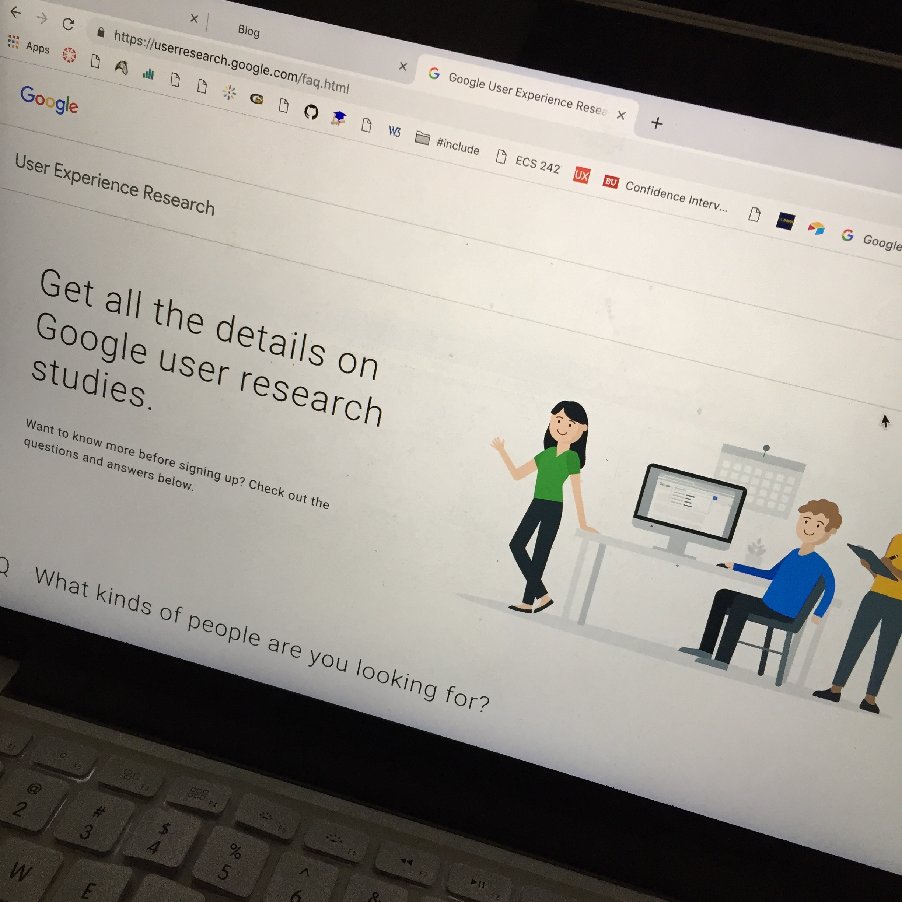

The Core Model
When we design websites, we're not only designing for the developers or for the designers; we're developing for the audience, the consumers. It's easy to just focus on a visually appealing website or a technically proficent one, instead of focusing on the "core model", or the purpose of focusing on the "core tasks its users need to accomplish".
When we apply the core model, we're thinking about the user needs all throughout the steps of the process. What do people want to get done? This entends all the way to a specific part of research / design called User Experience Research (which is what I eventually want to do!) that handles caring for users with empathy and attention throughout the design of a process. Testing and interviewing is involved (A/B testing, surveys, interviews) to make sure the the user needs are officially met.
The core model is a thinking tool that unifies all those working on the project all together to have a common goal and thinking standard! I think it's utmost important to always to designing for the users, and even better, for utmost usability, and it's cool to see how the UX part of UX/UI is developing day by day!
